Loading ...
|
4-2-3-1
|
Belgium | 3 | - | 2 | Senegal |
4-3-3
|
| HT 0-1 | ||||||
|
FIFA World CupWednesday 1 July 2026
|
||||||
- Venue
- Seattle Stadium
- Attendance
- 66,925
- Referee
- Héctor Saíd Martínez Sorto
Substitution46'
C. De Ketelaere
R. Lukaku
- 2
Substitution56'
J. Doku
D. Lukébakio
K. De Bruyne
N. Raskin
Substitution63'
H. Vanaken
D. Moreira
Yellow card64'
B. Mechele
Substitution78'
M. De Cuyper
T. Meunier
Goal86'
R. Lukaku
Assist: T. Meunier
Goal89'
Y. Tielemans
Assist: L. Trossard
Yellow card90'
Rudi José Garcia
Substitution109'
L. Trossard
A. Onana
Penalty scored120+5'
Y. Tielemans
Whistle45+6'
45+6'
Whistle90+8'
90+8'
Whistle105'
105'
Goal24'
H. Diarra
Goal51'
I. Sarr
Assist: M. Niakhaté
Substitution66'
P. Gueye
L. Camara
Yellow card67'
L. Camara
- 2
Substitution73'
I. Ndiaye
I. Mbaye
H. Diarra
P. Sarr
- 2
Substitution94'
S. Mané
N. Jackson
I. Jakobs
E. Diouf
Substitution96'
I. Gueye
B. Ndiaye
Belgium | |
|---|---|
Goalkeeper | |
| 1 | T. Courtois |
Defender | |
| 3 | A. Theate |
| 4 | B. Mechele 64' |
| 5 | M. De Cuyper 78' |
| 21 | T. Castagne |
Midfielder | |
| 7 | K. De Bruyne 56' |
| 8 | Y. Tielemans 89'120+5' |
| 10 | L. Trossard 109' |
| 11 | J. Doku 56' |
| 20 | H. Vanaken 63' |
Forward | |
| 17 | C. De Ketelaere 46' |
Substitutes | |
| 9 | R. Lukaku 46'86' |
| 14 | D. Lukébakio 56' |
| 15 | T. Meunier 78' |
| 19 | D. Moreira 63' |
| 23 | N. Raskin 56' |
| 24 | A. Onana 109' |
Senegal | |
Goalkeeper | |
| 23 | M. Diaw |
Defender | |
| 6 | P. Ciss |
| 14 | I. Jakobs 94' |
| 15 | K. Diatta |
| 19 | M. Niakhaté |
Midfielder | |
| 5 | I. Gueye 96' |
| 21 | H. Diarra 24'73' |
| 26 | P. Gueye 66' |
Forward | |
| 10 | S. Mané 94' |
| 13 | I. Ndiaye 73' |
| 18 | I. Sarr 51' |
Substitutes | |
| 8 | L. Camara 66'67' |
| 11 | N. Jackson 94' |
| 17 | P. Sarr 73' |
| 20 | I. Mbaye 73' |
| 22 | B. Ndiaye 96' |
| 25 | E. Diouf 94' |


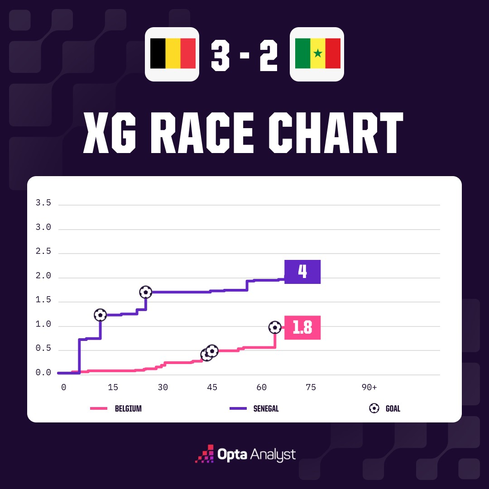
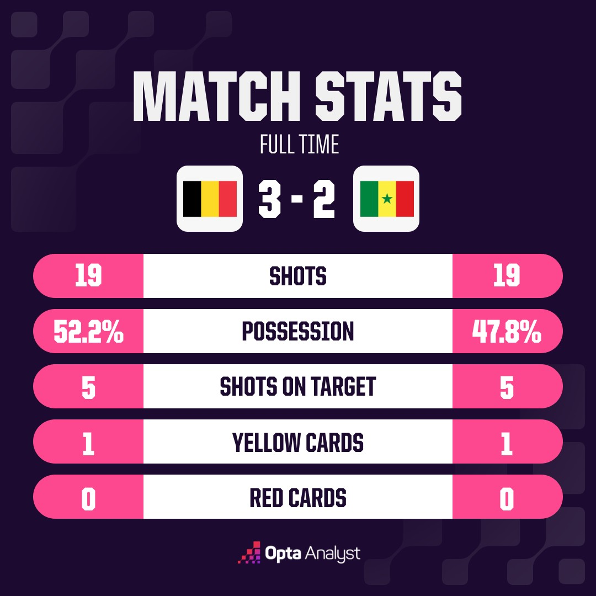
133'
Belgium are undefeated in their last 5 games in the FIFA World Cup, their last joint longest unbeaten streak was from 18th June 2018 to 6th July 2018.
133'
Belgium have won after trailing by two or more goals in the FIFA World Cup for the first time since 2nd July 2018 against Japan (a 3-2 win).
132'
No luck! Pape Sarr takes on a shot that, had they got it right, might have been set to test the goalkeeper, but instead it is sent off target and Belgium come away unscathed.
131'
Ismaïla Sarr has attempted 5 shots, the first time he has attempted at least 5 shots in a match in the FIFA World Cup since facing Norway on 23rd June 2026 (6 shots).
131'
Great block from Arthur Theate, as they get in the way of an attempt from Pathé Ciss that might have been set to cause the goalkeeper some problems. Solid defending from the Belgium player.
129'
A free-kick to Senegal, as Diego Moreira goes in and fouls Krépin Diatta. However, Belgium will not mind giving one away in this area too much, with plenty of distance to their goal.
128'
It’s backs to the wall now — Belgium throwing everything into defending their advantage, with a flurry of crucial interventions.
127'
That is a disappointing effort from Pape Sarr, who went for glory but got their attempt wrong, and the shot sailed off target. A frustrating moment for Senegal.
125'
Belgium have won 1 penalty in the 2026 FIFA World Cup, only Argentina (2) and Switzerland (2) have been awarded more.
125'
Youri Tielemans has scored his second goal in the 2026 FIFA World Cup.
125'
Belgium are having plenty of the ball, with 74.36% possession in the last 15 minutes. However, they have been unable to transfer that possessional dominance into a goal during that period.
125'
A lull in this match, as the teams prob and probe, but without much success. It has been 10 minutes since there was an attempt from either side, though Belgium are seeing more of the ball, with 79 per cent possession to Senegal’s 21 per cent during that time.
125'
GOAL! Youri Tielemans puts away their penalty and Belgium take the lead – it’s 3-2! No let-off for Senegal, who now have to get back into this one.
120'
OVERTURNED! VAR has decided to intervene here, and after that comprehensive check, the referee’s decision has been overturned.
120'
VAR! The technology is now intervening – will the referee’s decision be overturned, or will it stand? Let’s wait and see.
117'
LATE PENALTY! Huge drama in the closing stages as the referee awards a spot-kick to Belgium. Will this prove to be the winner?
114'
Can Belgium survive here? They will have some defending to do after the ball is turned behind for a corner kick. Will Senegal take this opportunity and grab the goal they have been pushing for?
113'
Bara Ndiaye goes for goal with a strike from distance, but Thibaut Courtois is able to watch it all the way and make the save. A bit of a tester, there.
110'
Free-kick! A foul from Krépin Diatta on Diego Moreira. It is well away from Senegal’s goal, so it is unlikely to result in a chance for Belgium.
109'
The Belgium manager is looking to the substitutes’ bench, bringing on Amadou Onana in place of Leandro Trossard. Will the change make a difference? Let’s find out!
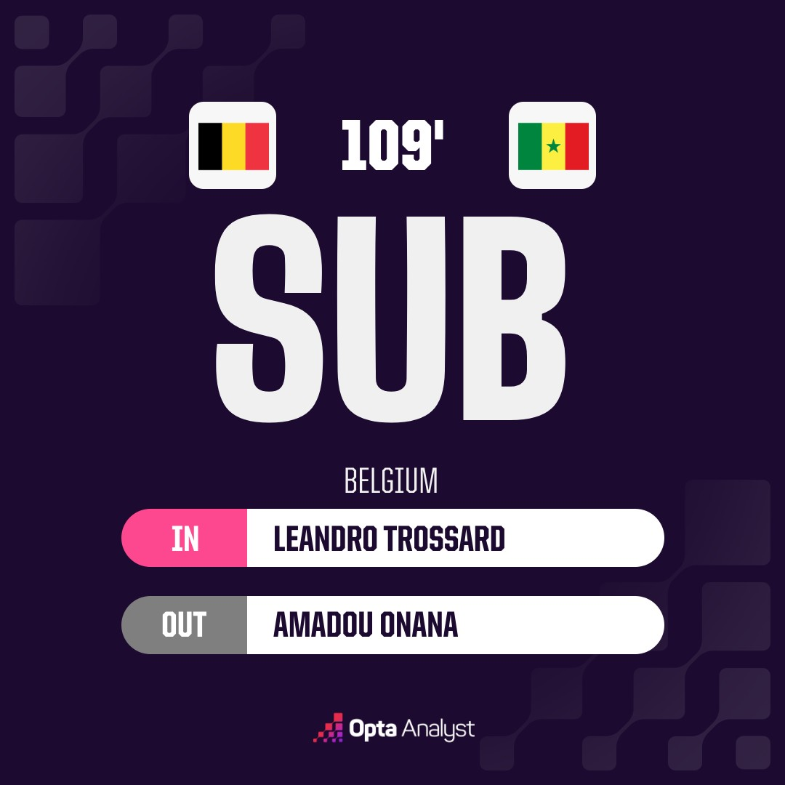
109'
HUGE CHANCE GOES BEGGING! What a miss that is from Ibrahim Mbaye, who looked all set to score a goal that their team need, but instead fails to direct their attempt into the back of the net. That was a big, big opportunity for Senegal.
107'
Nicolas Raskin goes in on Bara Ndiaye and concedes a foul. The free-kick is not in a particularly dangerous area from Belgium’s viewpoint, though.
107'
A chance goes begging as Nicolas Raskin gets off a shot that does not hit the target. They might have done better with that one, but instead it is a goal-kick to Senegal.
104'
That might have been going in! A fantastic block from Pathé Ciss, who gets in the way of a goal-bound effort from Leandro Trossard. Would the goalkeeper have been beaten? We will never know.
101'
Thomas Meunier goes in on Ismaïla Sarr and concedes a foul. The free-kick is not in a particularly dangerous area from Belgium’s viewpoint, though.
99'
Diego Moreira goes in on Bara Ndiaye and concedes a foul. The free-kick is not in a particularly dangerous area from Belgium’s viewpoint, though.
96'
The Senegal manager is looking to the substitutes’ bench, bringing on Bara Ndiaye in place of Idrissa Gueye. Will the change make a difference? Let’s find out!
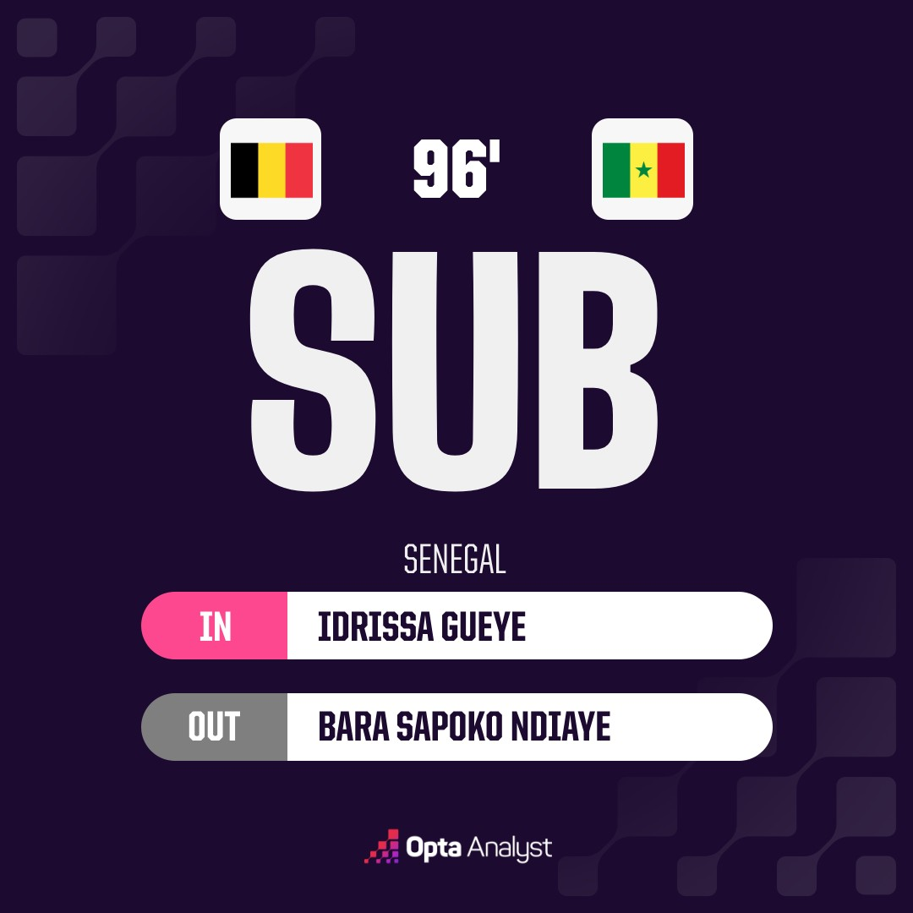
95'
Free-kick! A foul from Timothy Castagne on Ibrahim Mbaye. It is well away from Belgium’s goal, so it is unlikely to result in a chance for Senegal.
94'
Senegal are making a tactical change. Ismail Jakobs is leaving the field and in their place comes El Diouf – we will soon see if this switch has the desired impact.
94'
Substitution! Nicolas Jackson replaces Sadio Mané for Senegal as the manager shuffles the pack. Can Nicolas Jackson make an impression as this match continues?
93'
A rash challenge from Timothy Castagne, who sends Krépin Diatta tumbling, giving Senegal a free-kick. It is not in a threatening position, but it gives them a chance to get back on the ball.
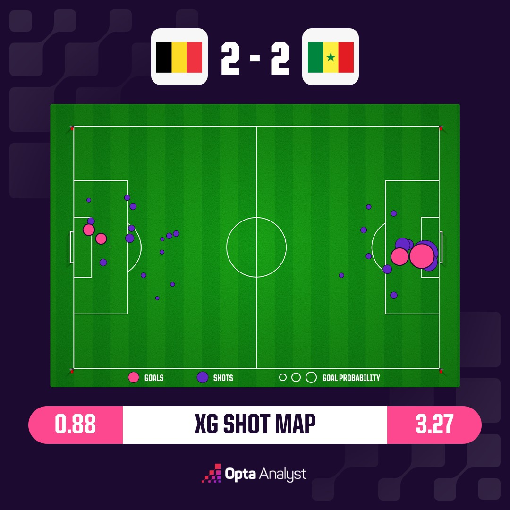
90+6'
MISS! A shot from Idrissa Gueye ends up being off target. They might have done a bit better with that one, but it remains Senegal 2-2 Belgium.
90+4'
Offside! As Belgium search for the goal they need, Diego Moreira looks set to get in behind the defensive line, but the assistant's flag is up.
90+3'
A rash challenge from Brandon Mechele, who sends Mory Diaw tumbling, giving Senegal a free-kick. It is not in a threatening position, but it gives them a chance to get back on the ball.
90+3'
No luck! Thomas Meunier takes on a shot that, had they got it right, might have been set to test the goalkeeper, but instead it is sent off target and Senegal come away unscathed.
90+2'
Corner! Belgium are pushing for a goal and now they have an opportunity from this set-piece.
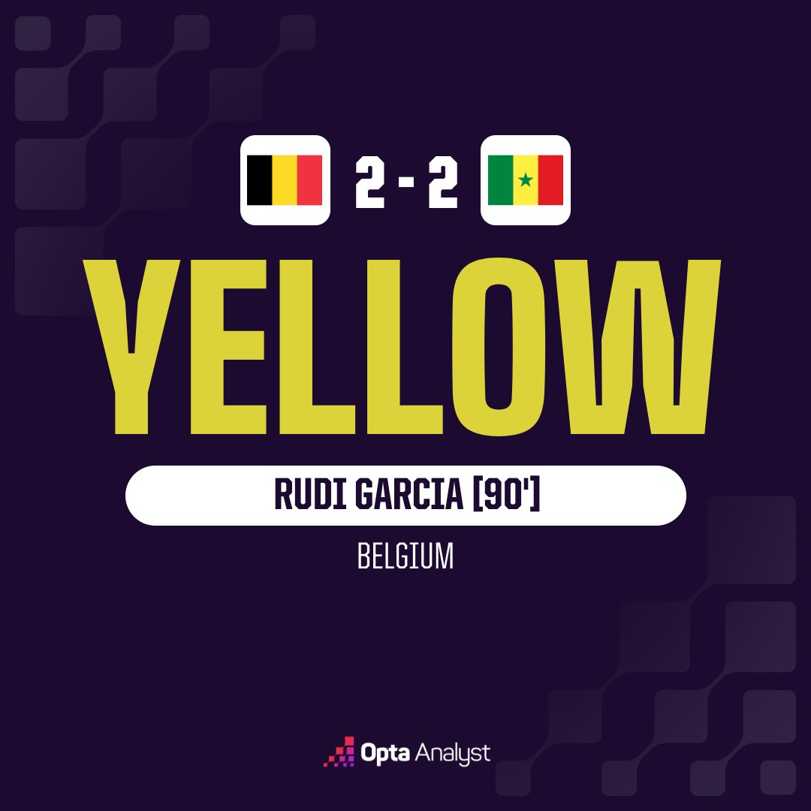
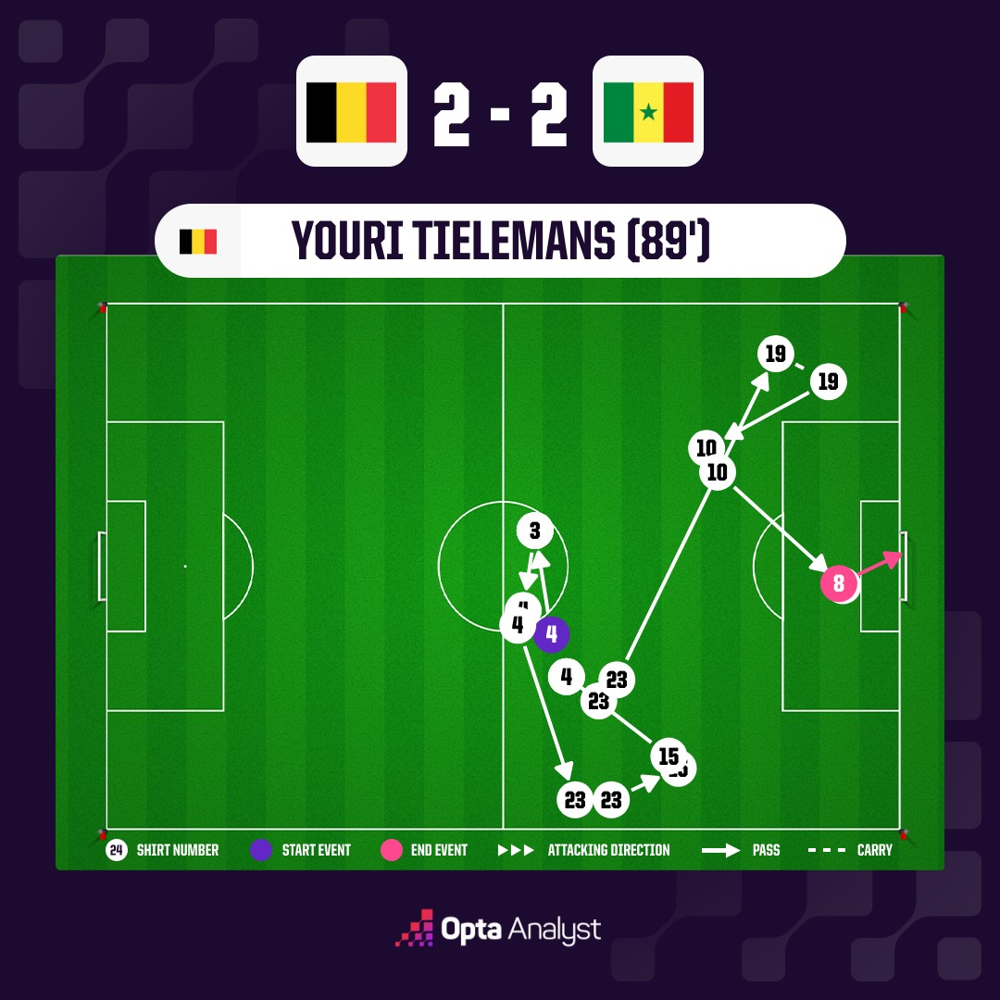
89'
Leandro Trossard has assisted his first goal in the 2026 FIFA World Cup.
89'
Youri Tielemans has scored his first goal in the 2026 FIFA World Cup.
89'
GOAL! Parity is restored by Youri Tielemans, who has hit home from inside the box to drag Belgium level. Senegal had been hoping to see this out, but now might have to settle for a draw. Unless, there is to be a late winner…
88'
MISS! The score remains 2-1, with Belgium relieved after Senegal’s Ibrahim Mbaye goes for goal but sends their attempt off target. Not one to write home about, that one.
86'
Thomas Meunier has assisted his first goal in the 2026 FIFA World Cup.
86'
Belgium have scored 3 goals via substitutes in the 2026 FIFA World Cup, only Senegal (4) have scored more.
86'
Romelu Lukaku has scored his seventh goal in the FIFA World Cup.
86'
GOAL! Game on! Romelu Lukaku has scored for Belgium and suddenly, after being well behind, they are right back in this contest. Could they go on to find an equaliser now?
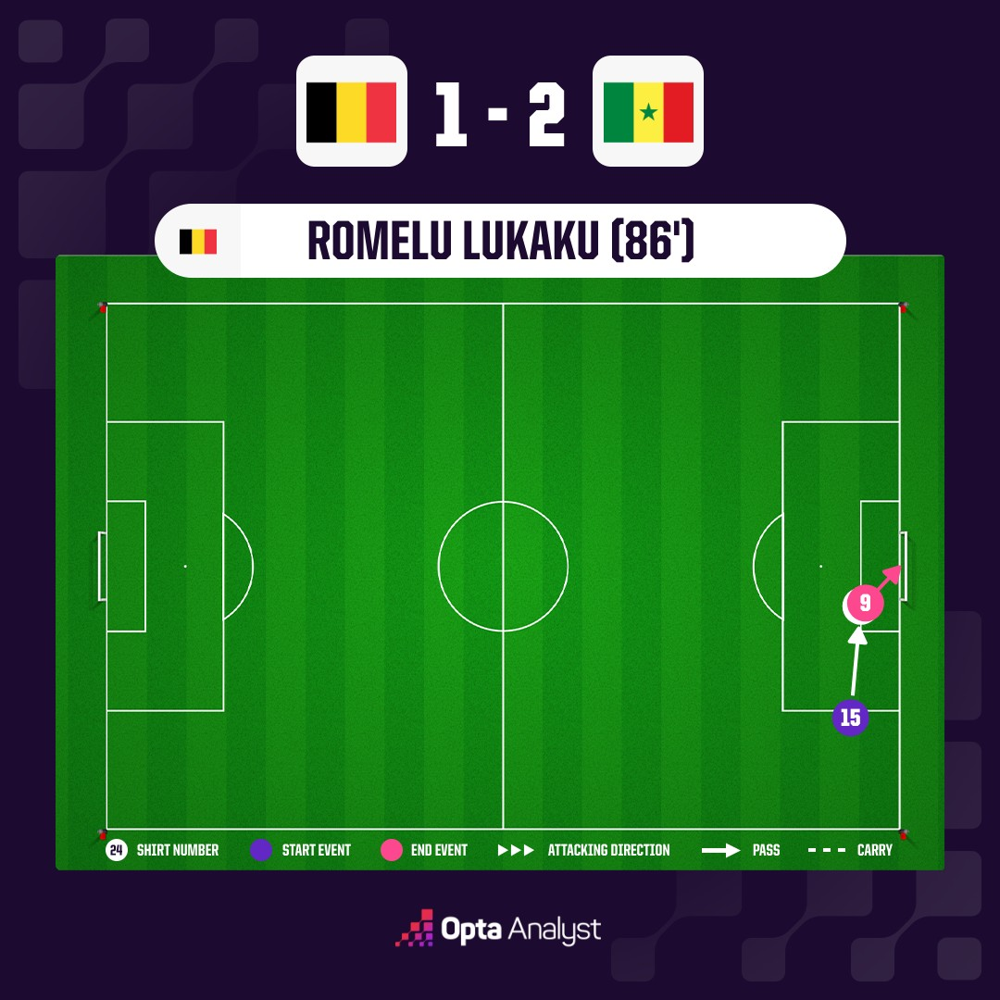
86'
Still behind, but Belgium are refusing to roll over - defensive urgency rising as they fend off more pressure and push for a late turnaround.
85'
Offside! Sadio Mané thought they were through on goal, but the Belgium defence stepped up in time to catch them offside, and the assistant referee puts their flag up.
84'
No luck! Youri Tielemans takes on a shot that, had they got it right, might have been set to test the goalkeeper, but instead it is sent off target and Senegal come away unscathed.
83'
No luck! Timothy Castagne takes on a shot that, had they got it right, might have been set to test the goalkeeper, but instead it is sent off target and Senegal come away unscathed.
82'
It has been 30 minutes since Senegal last attempted a shot in this game.
80'
Can Senegal make this chance count? They have won a free-kick in a threatening position after a foul from Timothy Castagne on Ismaïla Sarr. Will Belgium's defence be tested here?
79'
A rash challenge from Thomas Meunier, who sends Sadio Mané tumbling, giving Senegal a free-kick. It is not in a threatening position, but it gives them a chance to get back on the ball.
78'
Maxim De Cuyper’s match is over as Belgium decide to make a substitution. Thomas Meunier enters the field in what looks like a tactical change.
78'
MISS! The score remains 0-2, with Senegal relieved after Belgium’s Dodi Lukébakio goes for goal but sends their attempt off target. Not one to write home about, that one.
77'
Shot blocked! Arthur Theate unleashes an attempt at goal, but the ball does not reach its target thanks to Pathé Ciss, who makes a solid block to stem the danger – for now.
77'
Belgium have attempted the last 5 shots in this game, Senegal last shot was taken by Ismaïla Sarr in the 51st minute.
77'
Plenty of the ball in the last quarter-of-an-hour of this match for Belgium, but Senegal have been able to hold them off with ease, with Belgium having failed to even muster a shot at goal.
76'
A rash challenge from Youri Tielemans, who sends Sadio Mané tumbling, giving Senegal a free-kick. It is not in a threatening position, but it gives them a chance to get back on the ball.
76'
With 15 minutes left to play, plus stoppage time, it is Belgium who have had the better of the possession, with 55.21%. Senegal, on the other hand, have had 44.79% of the ball so far.
73'
Substitution! Pape Sarr replaces Habib Diarra for Senegal as the manager shuffles the pack. Can Pape Sarr make an impression as this match continues?
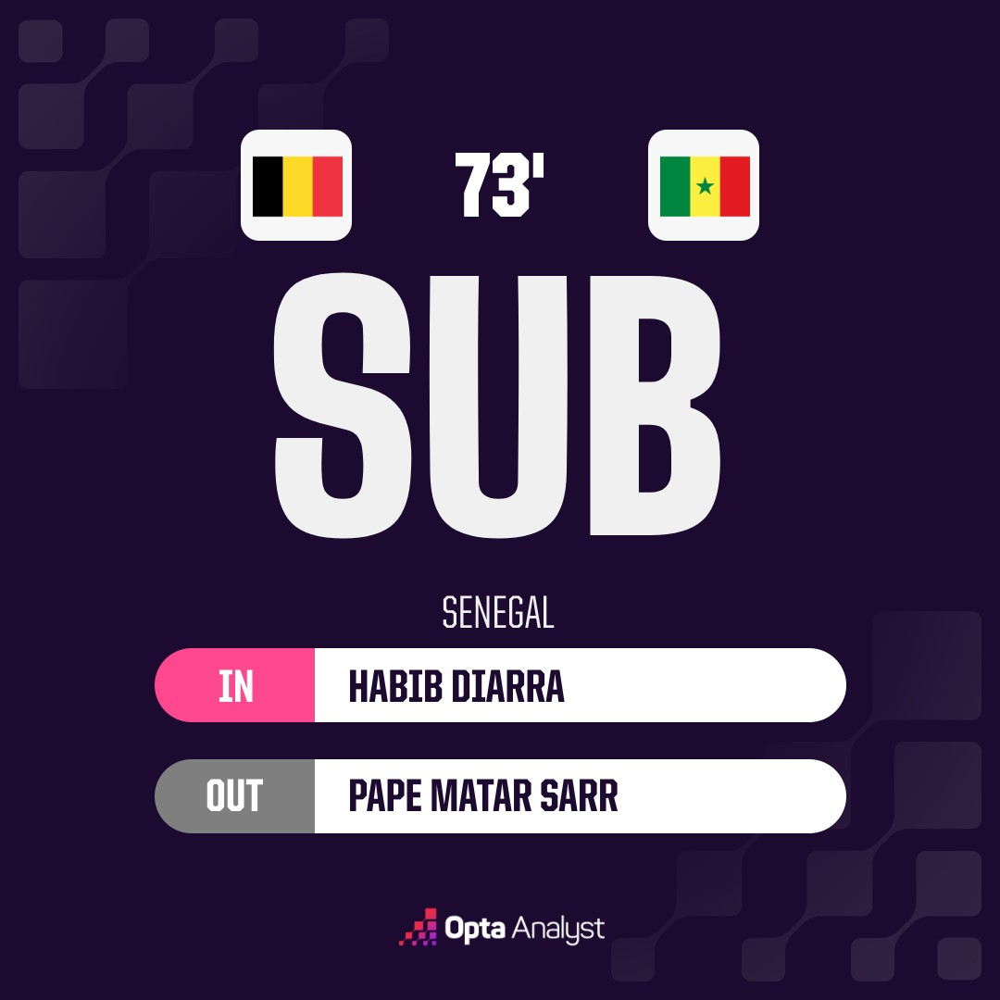
73'
The Senegal manager is looking to the substitutes’ bench, bringing on Ibrahim Mbaye in place of Iliman Ndiaye. Will the change make a difference? Let’s find out!
72'
Neither team has had a shot in the past 10 minutes, as this match just enters something of a down period. Belgium have seen more of the ball, with 80 per cent possession, but Senegal are keeping them away from goal. There is still a chance the match will spark into life, though.
67'
BOOKING! Yellow card for Lamine Camara, who is penalised for a foul. The referee waves away their remonstrations, and now they will have to be careful.
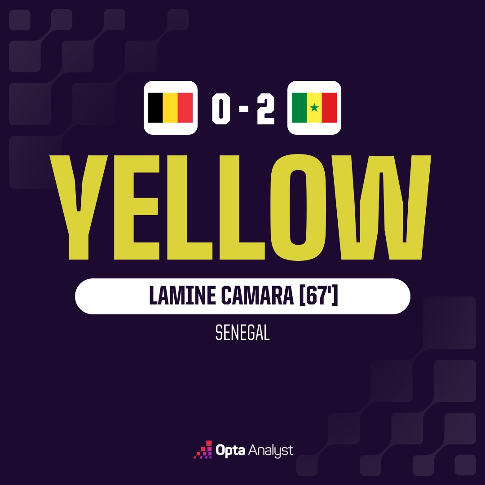
67'
Lamine Camara goes in on Leandro Trossard and concedes a foul. The free-kick is not in a particularly dangerous area from Senegal’s viewpoint, though.
66'
Plenty of the ball in the last quarter-of-an-hour of this match for Belgium, but still Senegal stand firm, despite having had only 31.01% of the ball in that period. Can Belgium make their possessional dominance count?
66'
Substitution! Lamine Camara replaces Pape Gueye for Senegal as the manager shuffles the pack. Can Lamine Camara make an impression as this match continues?
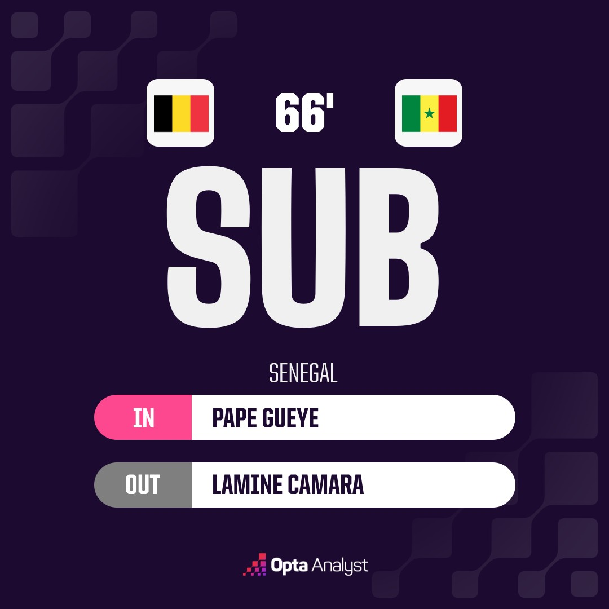
66'
With 25 minutes left to play, this game is about to go into its final quarter. So, that seems a good chance to check on the shot count. Belgium have had 9 efforts, with 2 of those hitting the target. Senegal, on the other hand, have had 11 shots, getting 4 of those attempts on target.
65'
Romelu Lukaku makes a run in behind but the Senegal defensive line were alert, and stepped up in time to catch them offside. That run just needed to be timed better.
64'
That is a booking for Brandon Mechele, who has received their first yellow card. They are not happy with the decision, but it is done now, and they will have to be careful for the rest of this game.
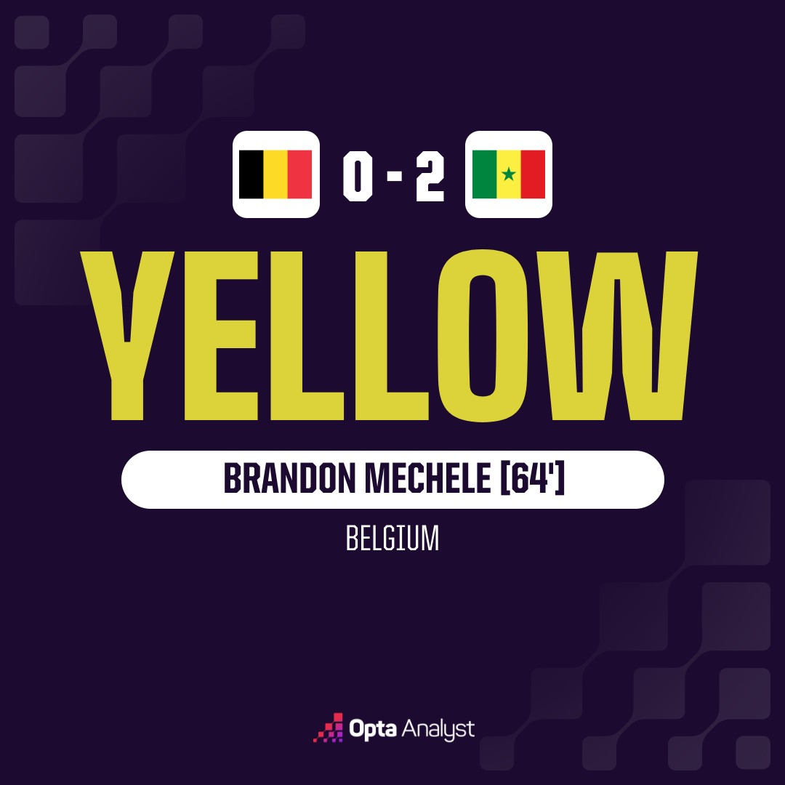
64'
Brandon Mechele goes in on Ismaïla Sarr and concedes a foul. The free-kick is not in a particularly dangerous area from Belgium’s viewpoint, though.
63'
The Belgium manager is looking to the substitutes’ bench, bringing on Diego Moreira in place of Hans Vanaken. Will the change make a difference? Let’s find out!
62'
A free-kick to Belgium, as Krépin Diatta goes in and fouls Leandro Trossard. However, Senegal will not mind giving one away in this area too much, with plenty of distance to their goal.
62'
It's all hands on deck for Senegal as they defend their lead, making a wave of critical blocks and clearances
62'
No luck! Dodi Lukébakio takes on a shot that, had they got it right, might have been set to test the goalkeeper, but instead it is sent off target and Senegal come away unscathed.
60'
Senegal have a corner to defend now after Moussa Niakhaté diverts an attempt from Youri Tielemans out of play. Can Belgium take this chance to get a good delivery in and really test their opponent’s defence?
60'
BLOCK! An intervention from Iliman Ndiaye might have just prevented a goal, with the defending player getting in the way of an attempt from Dodi Lukébakio. Solid defending there!
58'
A foul from Nicolas Raskin on Krépin Diatta sees Senegal win a free-kick, but it is not in a dangerous position, so Belgium should be confident they can defend it easily enough.
57'
No luck! Brandon Mechele takes on a shot that, had they got it right, might have been set to test the goalkeeper, but instead it is sent off target and Senegal come away unscathed.
56'
Belgium are making a tactical change. Kevin De Bruyne is leaving the field and in their place comes Nicolas Raskin – we will soon see if this switch has the desired impact.
56'
Substitution! Dodi Lukébakio replaces Jérémy Doku for Belgium as the manager shuffles the pack. Can Dodi Lukébakio make an impression as this match continues?
55'
A rash challenge from Iliman Ndiaye, who sends Hans Vanaken tumbling, giving Belgium a free-kick. It is not in a threatening position, but it gives them a chance to get back on the ball.
54'
A rash challenge from Ismail Jakobs, who sends Jérémy Doku tumbling, giving Belgium a free-kick. It is not in a threatening position, but it gives them a chance to get back on the ball.
53'
Youri Tielemans goes in on Ismaïla Sarr and concedes a foul. The free-kick is not in a particularly dangerous area from Belgium’s viewpoint, though.
51'
Moussa Niakhaté has assisted his first goal in the 2026 FIFA World Cup.
51'
Ismaïla Sarr has scored his fifth goal in the FIFA World Cup.
51'
Is that game over? Senegal are now well ahead, having extended their lead to 2 goals thanks to Ismaïla Sarr’s effort. It’s now 2-0, and Belgium face an uphill battle to get back into it.
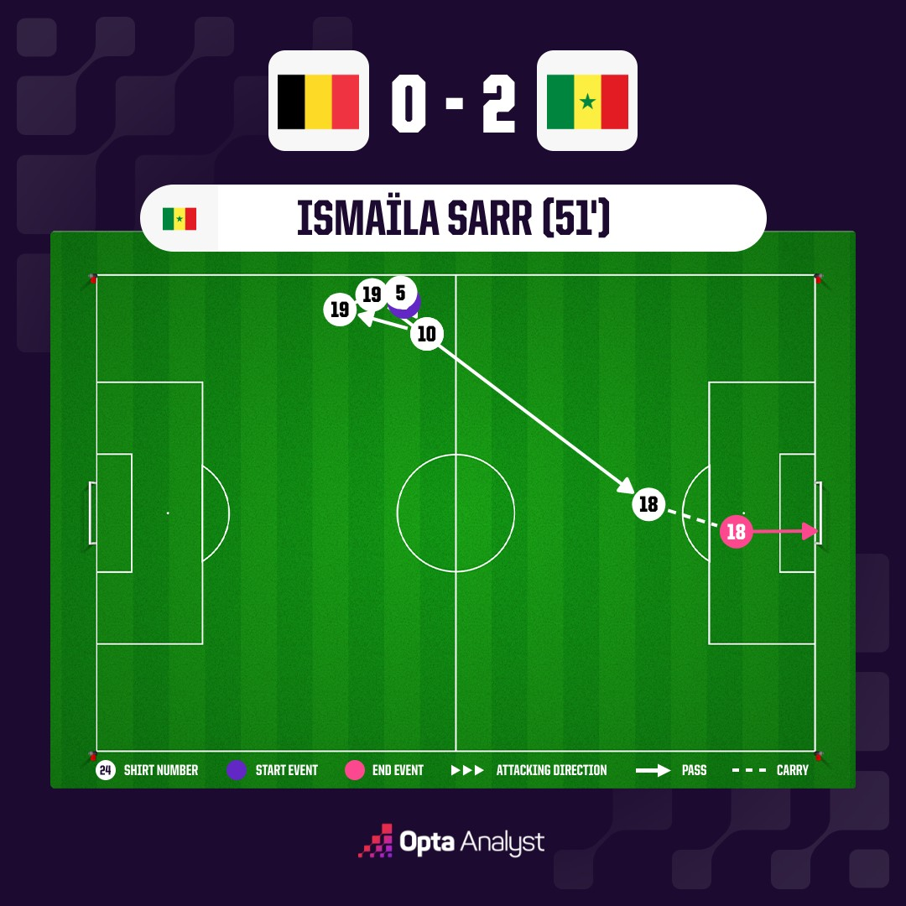
51'
MISS! Habib Diarra fluffs their lines, and will Senegal be made to pay for that miss? Belgium could have been down and out if that attempt had gone in, but at least they have not fallen even further behind in this contest.
50'
A rash challenge from Maxim De Cuyper, who sends Iliman Ndiaye tumbling, giving Senegal a free-kick. It is not in a threatening position, but it gives them a chance to get back on the ball.
48'
A foul from Krépin Diatta on Leandro Trossard sees Belgium win a free-kick, but it is not in a dangerous position, so Senegal should be confident they can defend it easily enough.
48'
Sadio Mané goes in on Jérémy Doku and concedes a foul. The free-kick is not in a particularly dangerous area from Senegal’s viewpoint, though.
46'
That is a disappointing effort from Iliman Ndiaye, who went for glory but got their attempt wrong, and the shot sailed off target. A frustrating moment for Senegal.
46'
Shot blocked! Pape Gueye unleashes an attempt at goal, but the ball does not reach its target thanks to Kevin De Bruyne, who makes a solid block to stem the danger – for now.
46'
Charles De Ketelaere’s match is over as Belgium decide to make a substitution. Romelu Lukaku enters the field in what looks like a tactical change.
46'
Romelu Lukaku is making his 16th appearance in the FIFA World Cup.
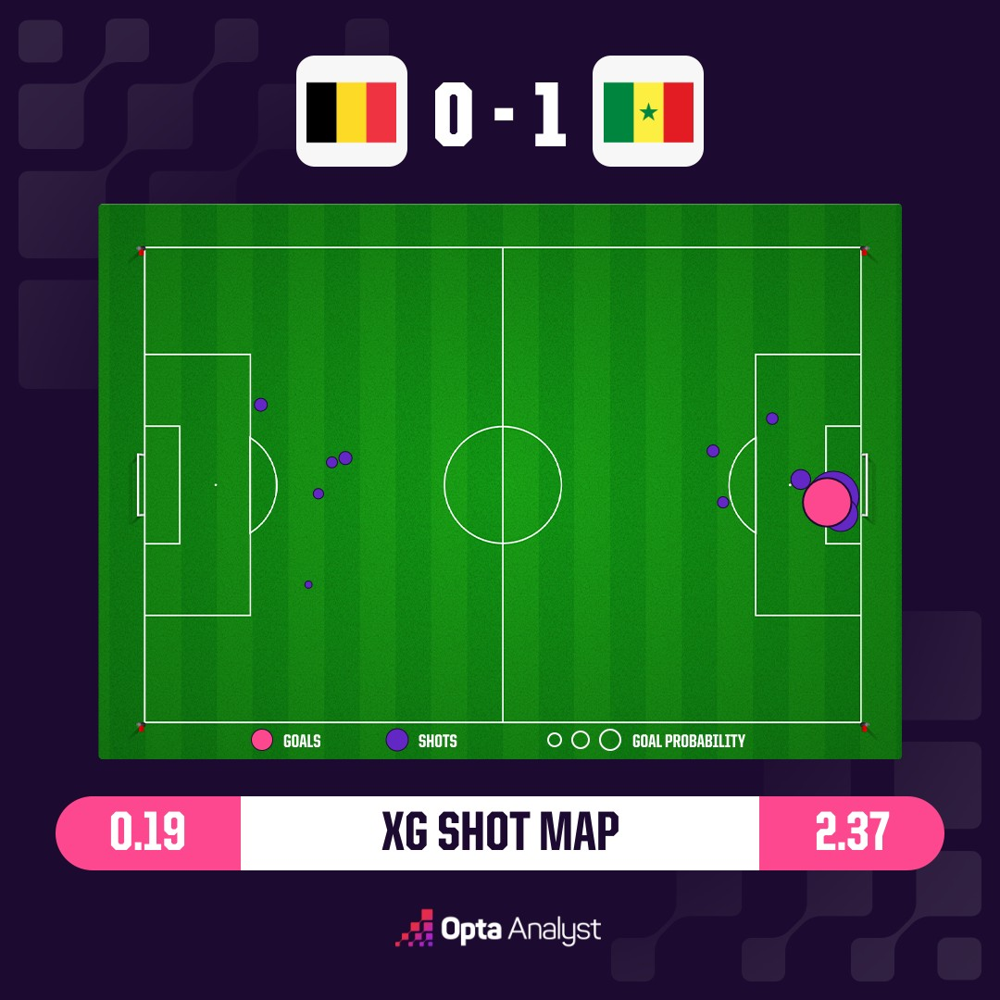
45+6'
Half-time! We reach the interval at Seattle Stadium and it is Senegal who have a 0-1 lead over Belgium. Can they hold on and see this out in the second half?
45+6'
That is a disappointing effort from Kevin De Bruyne, who went for glory but got their attempt wrong, and the shot sailed off target. A frustrating moment for Belgium.
45+5'
BLOCK! An intervention from Habib Diarra might have just prevented a goal, with the defending player getting in the way of an attempt from Maxim De Cuyper. Solid defending there!
45+4'
Good play from Jérémy Doku, who draws a foul from Sadio Mané to hand Belgium a free-kick in a dangerous position. Will they create something from this set-piece?
45+3'
A free-kick to Belgium, as Pape Gueye goes in and fouls Jérémy Doku. However, Senegal will not mind giving one away in this area too much, with plenty of distance to their goal.
45+1'
MISS! The score remains 1-0, with Belgium relieved after Senegal’s Pape Gueye goes for goal but sends their attempt off target. Not one to write home about, that one.
45+1'
Excellent defensive work from Senegal; their organization and success in key duels are effectively safeguarding their lead.
45+1'
CORNER! The pressure is building for Belgium as they win a set-piece after Maxim De Cuyper's attempt is blocked by Mory Diaw and diverted out of play.
45+1'
Plenty of the ball in the last quarter-of-an-hour of this match for Belgium, but still Senegal stand firm, despite having had only 26.35% of the ball in that period. Can Belgium make their possessional dominance count?
44'
Corner! Belgium are pushing for a goal and now they have an opportunity from this set-piece.
44'
Belgium are racking up corners and free-kicks - they’re starting to dominate in dangerous areas.
44'
A foul from Pape Gueye on Hans Vanaken sees Belgium win a free-kick, but it is not in a dangerous position, so Senegal should be confident they can defend it easily enough.
42'
Free-kick! A foul from Ismaïla Sarr on Youri Tielemans. It is well away from Senegal’s goal, so it is unlikely to result in a chance for Belgium.
41'
A foul from Maxim De Cuyper on Krépin Diatta sees Senegal win a free-kick, but it is not in a dangerous position, so Belgium should be confident they can defend it easily enough.
40'
Belgium are having plenty of the ball, with 65.12% possession in the last 15 minutes. However, they have been unable to transfer that possessional dominance into a goal during that spell, and are not even generating shooting opportunities, so Senegal may not be unduly alarmed.
38'
Free-kick! A foul from Leandro Trossard on Pape Gueye. It is well away from Belgium’s goal, so it is unlikely to result in a chance for Senegal.
37'
Excellent defensive work from Senegal; their organization and success in key duels are effectively safeguarding their lead.
37'
SAVED! Good work from Thibaut Courtois, who stands firm to deny Sadio Mané, who managed to get a shot away from inside the Belgium area.
35'
A lull in this match, as the teams prob and probe, but without much success. It has been 10 minutes since there was an attempt from either side, though Belgium are seeing more of the ball, with 57 per cent possession to Senegal’s 43 per cent during that time.
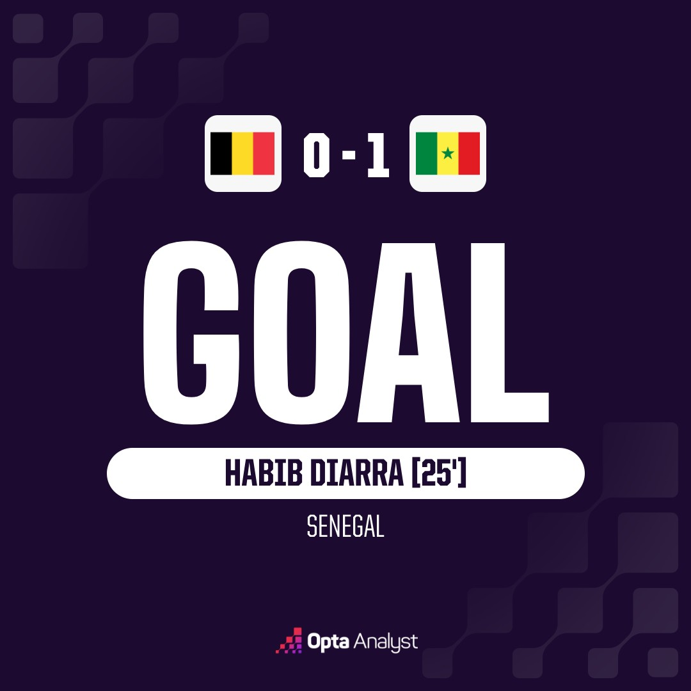
25'
Habib Diarra has scored his second goal in the 2026 FIFA World Cup.
25'
GOAL! Senegal are in the lead! Habib Diarra scores from inside the box to give his side the advantage in this match. Can Belgium find a way back into this, or will Senegal go on and win it now?
24'
MISSED! That is really poor from Ismaïla Sarr, who fails to convert from a golden opportunity, with the goal gaping. Will Senegal pay for their profligacy, or can they put that miss behind them?
24'
There is plenty of possession for Senegal, with 65.37% compared to Belgium 34.63 % in the last 15 minutes. However, Senegal have not been able to turn that dominance of the ball into a goal.
21'
A foul from Youri Tielemans on Habib Diarra sees Senegal win a free-kick, but it is not in a dangerous position, so Belgium should be confident they can defend it easily enough.
20'
No luck – it’s offside! Sadio Mané looked to dart in behind and get on the end of a pass, yet they just went too early, and the flag is up to signal offside.
19'
Can Belgium survive here? They will have some defending to do after the ball is turned behind for a corner kick. Will Senegal take this opportunity and grab the goal they have been pushing for?
18'
No luck! Kevin De Bruyne takes on a shot that, had they got it right, might have been set to test the goalkeeper, but instead it is sent off target and Senegal come away unscathed.
17'
SAVE! A shot from outside the box by Senegal Idrissa Gueye was heading in, but Belgium Thibaut Courtois keeps it out with a smart stop.
14'
Free-kick! A foul from Timothy Castagne on Sadio Mané. It is well away from Belgium’s goal, so it is unlikely to result in a chance for Senegal.
13'
No luck! Ismaïla Sarr takes on a shot that, had they got it right, might have been set to test the goalkeeper, but instead it is sent off target and Belgium come away unscathed.
13'
What a miss! That was a huge chance for Ismaïla Sarr, but they have failed to convert. What an opportunity that was for Senegal.
12'
It’s been tight so far, and Belgium are making sure it stays that way with strong defensive discipline and well-timed clearances.
10'
Arthur Theate goes in on Ismaïla Sarr and concedes a foul. The free-kick is not in a particularly dangerous area from Belgium’s viewpoint, though.
9'
SHOT! Leandro Trossard manages to get a shot off from inside the area, but although it was heading in, they cannot get enough on it to beat Mory Diaw, who makes the save.
7'
A foul from Youri Tielemans on Sadio Mané sees Senegal win a free-kick, but it is not in a dangerous position, so Belgium should be confident they can defend it easily enough.
1'
We are under way as Belgium kick off at Seattle Stadium. Let's hope an entertaining contest is in store.
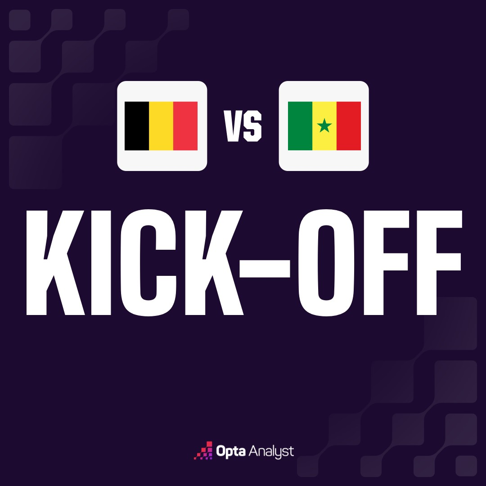
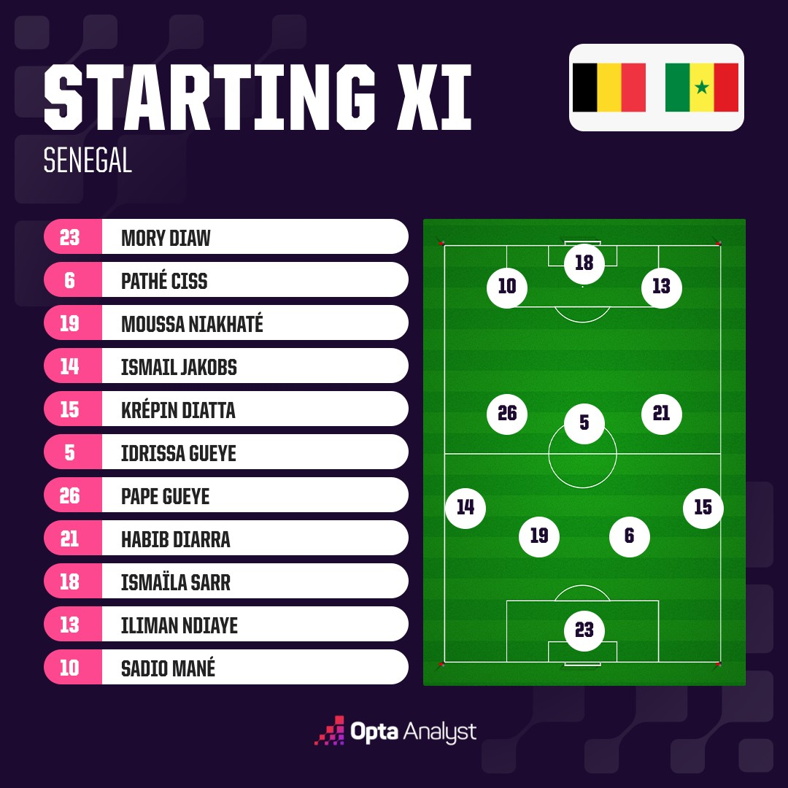
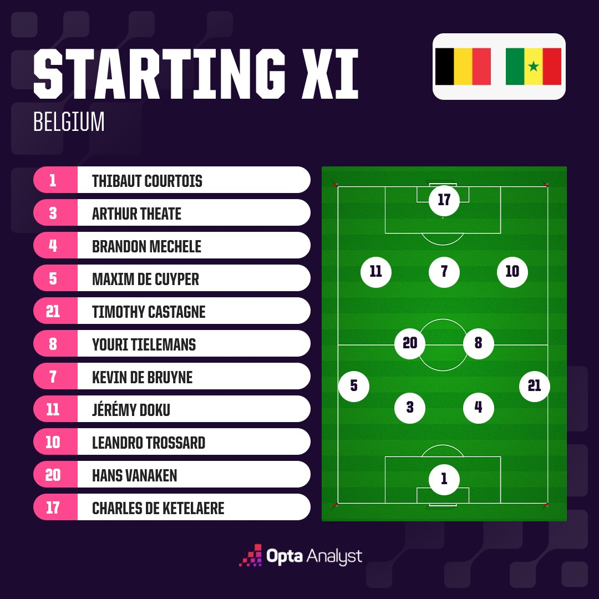
Kevin De Bruyne is making his 17th appearance in the FIFA World Cup.
Thibaut Courtois is making his 19th appearance in the FIFA World Cup.
There have been 3 or more goals scored in each of Senegal's last 4 games
Belgium take on Senegal on Wednesday for a FIFA World Cup Round of 32 clash at Seattle Stadium.
Belgium earned a first competition win this season with a 5-1 victory over New Zealand in their last group stage match on June 26. Leandro Trossard caught the eye with two goals. They are undefeated in their last 16 games in all competitions.
Senegal won for the first time in the competition this year in their last group stage game on June 26, beating Iraq 5-0 at Toronto Stadium. Pape Gueye netted a brace to lead the scoring. In 2026, they have won six, drawn one, and lost four.
Belgium finished first in their group on five points, while Senegal's three points placed them third.
Trossard has caught the eye for Belgium in World Cup play. The attacking midfielder is the team's top scorer with two goals, one of those having been the crucial first of the match. Senegal have been spearheaded in attack by Ismaïla Sarr, who has netted on three occasions in the current World Cup campaign.
The Senegalese side have scored in each of their three World Cup contests this season.
In their last six matches in all competitions, Belgium have won three and drawn three. The Belgian side scored 14 and conceded three in that period, scoring first in three of the six contests. They had three first-half goals, while their opponents netted two times in the first 45 minutes. Senegal have won two, drawn one and lost three in their last six. The Senegalese side scored 13 and conceded 10 over that period, netting first in two of the six. They had three goals in the first half, while their opponents netted three times before the break.
-
General
Possession 52.3% 52.31647.68447.7% Possession lost in defensive half 23 235555 Possession lost in middle third 56 565757 Duels 117 117121121 Duels success rate 53.0% 52.99144.62844.6% Aerial duels 43 434343 Aerial duels won 65.1% 65.11634.88434.9% Successful dribbles 11 1199 Fouls won 12 122222 Offsides 2 222 Corner awarded 4 422 -
Distribution
Passes 701 701639639 Long passes 50 508484 Long passes proportion (%) 7.1% 7.13313.14613.1% Passing accuracy 85.9% 85.87783.88183.9% Passes in opponents' half 367 367378378 Passing accuracy in opponents' half (%) 78.2% 78.20279.36579.4% Total passes in the final third 185 185200200 Passing accuracy in final third (%) 70.3% 70.277676.0% Forward passes 431 431382382 Forward passes (%) 61.5% 61.48459.78159.8% Through balls 4 466 Final third entries 72 729292 Penalty area entries 41 412626 Total open play crosses 23 231919 Crosses 26 262222 Crossing accuracy 26.9% 26.92322.72722.7% -
Attack
Goals 3 322 Shots 19 191919 Shots on target 5 555 Blocked shots 5 533 Headed shots 4 411 Shots outside the box 8 899 Shots inside the box 11 111010 Shots accuracy excluding blocked shots 35.7% 35.71431.2531.3% Shooting accuracy 26.3% 26.31626.31626.3% Key Passes 15 151313 -
Defence
Tackles 12 121212 Tackles success rate 41.7% 41.66733.33333.3% Clearances 28 283131 Interceptions 8 81111 Recoveries 64 646060 Attacking third recovery 3 333 Defensive third recovery 40 403636 Midfield third recovery 21 212121 Recoveries in attacking half (%) 4.7% 4.68855.0% -
Discipline
Fouls conceded 22 221212 Yellow cards 1 111 Red cards 0 000